A identificação de armas de fogo pode ser feita de modo direto, quando o exame é efetuado na própria arma, ou de modo indireto, quando o exame é efetuado nas marcas impressas pelas armas em elementos de munição. Na presente unidade, serão tratados os exames diretos, ou seja, aqueles efetuados na própria arma, sendo os exames indiretos tratados mais à frente.
Com relação às armas questionadas que serão enviadas para análise, o pri meiro cuidado é saber se haverá necessidade de exames papiloscópicos, de DNA ou outros microvestígios, o que requer cuidados especiais, e encaminhamento a outros setores especializados de perícia antes do encaminhamento para exames de Balística Forense. Todas as armas coletadas em local de crime ou apreendidas e as que serão devolvidas após exames periciais deverão ser desmuniciadas, incluindo retirada de pente carregador e de cartucho(s) ou estojo(s) da(s) câmara(s) ou tubo(s) carregadores, seguido de fechamento e acionamento de travas de segurança, garantindo a segurança dos que irão transportar ou manusear este material. Havendo munição nos carregadores, estes poderão ser esvaziados ou enviados com a munição no interior, dependendo dos interesses da investigação. Para inserção de arma em envelope de segurança, o recomendado é acondicionar a munição em uma embalagem primária e o conjunto arma mais a munição com a qual foi encontrada em um mesmo envelope de segurança. Observação: caso não seja possível tornar a arma segura antes de seu enca minhamento para perícia ou após exames periciais, deve ser utilizado alguma etiqueta bem visível e com caracteres grandes que informe a condição de “PERIGO: ARMA QUENTE”.
A caracterização de uma arma de fogo é denominada imediata ou direta, quando os exames são efetuados diretamente na arma de fogo a fim de determinar suas características gerais e peculiaridades. A descrição de uma arma de fogo deve iniciar-se pelas características mais genéricas e, paulatinamente, ir tornando-se mais específica, até descrever as características individuais. A descrição da arma deve iniciar-se pelo tipo de arma (revólver, pistola etc.), marca, modelo, calibre e número de série, preferencialmente com registro fotográfico da arma, como um todo, e dos elementos descritos, individualmente, incluindo sua posição na arma. No tocante ao mecanismo, deve ser identificado se o seu funcionamento é de movimento simples ou duplo, indicando se todos os movimentos e ações funcio nam normalmente. Com referência ao sistema de percussão, deve ser indicado se é central ou radial, direto ou indireto, bem como se o cão existe e, quando a percussão é direta, determinar se o percussor é fixo ou articulado. O cano deve ser medido, incluindo o cone de forçamento, no caso dos revólveres, e câmara de combustão, no caso de pistolas e armas longas. Quando existentes, o número e orientação das raias devem ser indicados. O tambor deve ser completamente descrito em relação ao tipo (reversível ou fixo), movimentação (horário ou anti-horário), número de câmaras e outras características pertinentes. No caso de armas semiautomáticas e automáticas, devem ser indicadas as características do carregador e sua capacidade. Deve ser indicado, individualmente para cada parte da arma, o material utilizado na sua construção (exemplo: cano e ferrolho em aço oxidado; armação e coronha em material polimérico – descrição típica de pistola Glock). Quando toda a arma é feita apenas de um material, como no caso de revólveres de aço inoxidável, por exemplo, basta indicar de que material a arma é feita, sem discriminação das partes (exemplo: Arma em aço oxidado – descrição típica de pistola Imbel). Por fim, qualquer outra característica, como o estado de conservação ou des gaste de peças específicas que possa ajudar na individualização da arma, ou que tenha sido especificamente questionada, pode ser acrescentada a sua descrição. Nos laudos periciais de Balística Forense da Polícia Federal em que é efetuada a descrição de algum armamento, os dados são colocados em uma tabela, de modo a facilitar a leitura das informações. No Anexo I, encontram-se exemplos de descrições de algumas armas de fogo.
Muitas vezes são apresentadas armas para perícia nas quais os sinais de identificação foram destruídos, no todo ou em parte, de modo involuntário, como no caso de ferrugem; ou voluntária e delituosamente, como no caso da supressão do número de série com o objetivo de encobrir a origem da arma. Caso a aposição dos sinais de identificação tenha sido efetuada por meio de cunhagem a frio, a supressão dos caracteres pode, muitas vezes, deixar sinais latentes, os quais podem ser revelados por meio de técnicas metalográficas. Isto é possível devido ao fato que a cunhagem a frio altera a estrutura metálica por baixo dos caracteres cunhados, de modo que, mesmo após sua cuidadosa remoção, estes podem ser revelados pelo emprego de reagentes adequados.
| (a) inicia-se o processo de cunhagem a frio; | |
|---|---|
| (b) o qual altera a estrutura metálica por baixo dos caracteres impressos; | |
| (c) a superfície metálica é lixada e polida de modo a suprimir os caracteres impressos; | |
| (d) muitas vezes, não altera os vestígios latentes da impressão; | |
| (e) estes vestígios latentes são tratados com reveladores apropriados; | |
| (f) os vestígios permitem que o perito revele os caracteres suprimidos. |
Figura 47 – Ilustração do processo de cunhagem, adulteração e revelação da numeração de
série em uma arma de fogo (Ilustrações: Marcelo Jost). A sequência de figuras anterior mostra, de modo esquemático, um corte na armação de um revólver, acompanhando os processos de cunhagem a frio, adulteração e revelação de caracteres de identificação.
O procedimento experimental consiste em, primeiramente, proteger, com uma generosa camada de graxa, todas as partes da arma que não tenham relação com a área a ser revelada. Isto porque todas as soluções reveladoras possuem ácidos voláteis que acabam por corroer todas as partes não protegidas, danificando desnecessariamente a arma. Após isso, procede-se a uma limpeza e delicado polimento da região a ser revelada, tratando-se, em seguida, com o reagente apropriado, conforme o metal que está sendo revelado. Caso a primeira tentativa de revelação não seja bem-sucedida, a superfície deve ser novamente limpa e polida, repetindo-se o processo até que os caracteres comecem a ser revelados. Caso a pressão de cunhagem tenha sido desigual, de um caractere para o outro, eles serão revelados de modo desigual, sendo conveniente fotografar todas as etapas do procedimento de revelação. As figuras a seguir mostram uma sequência de procedimentos em uma revelação bem-sucedida de numeração de série suprimida. Os procedimentos de revelação serão infrutíferos em algumas situações, incluindo: a) se o processo de impressão dos caracteres não tiver sido efetuado por cunhagem a frio como, por exemplo, nos processos de impressão a laser; e b) caso a adulteração tenha sido muito profunda, destruindo completamente os vestígios latentes existentes no metal. Nesse caso, também podem ser efetuadas revelações parciais de caracteres, dependendo da extensão da adulteração, conforme ilustra a figura abaixo
| (a)estado original da numeração suprimida | |
|---|---|
| (b) após tratamento superficial comlixas 180 e 220; |
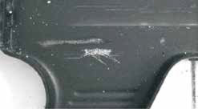
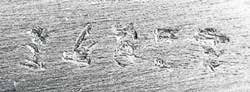
| (c) após tratamento superficial comlixas 300 e 400; | |
|---|---|
| (d) após primeira aplicação dorevelador; | |
| (e) após tratamento superficial com lixas 300 e 400, seguido de uma segunda aplicação do revelador; | |
| (f) após tratamento superficial suave com lixa 400 e borrifo de óleo, mostrando claramente a numeração 14828. |
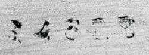
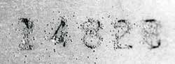
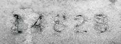
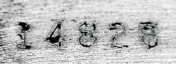
Figura 48 – Exemplo real de um processo de revelação de caracteres (fotografias: Marcelo Jost).
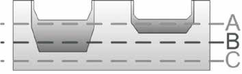
Figura 49 – O procedimento de revelação de caracteres pode
ser (A) completo, (B) incompleto ou (C) inviável, dependendo da profundidade da adulteração da numeração original. (Ilustração: Marcelo Jost). No Anexo II são listadas as formulações de alguns reveladores, de acordo com o metal de que é feita a superfície a ser revelada, bem como de suas condições de conservação.
Uma vez que a arma de fogo somente pode ser caracterizada como tal se for capaz de efetuar disparos, é bastante comum o perito receber materiais questio nados com a formulação de quesitos do tipo: “no estado em que se encontram, as armas enviadas para exame são eficientes para efetuar disparos?”. O objetivo dos exames efetuados pelo perito será determinar se a arma se encontra eficaz para produzir tiro, e se não, quais as causas da sua ineficácia. Na Polícia Federal os testes de eficiência em armas de fogo devem ser efetuados seguindo as instruções contidas INSTRUÇÃO TÉCNICA N.º 016/2012-DITEC/ DPF, DE 05 DE OUTUBRO DE 2012. Devem ser testados os procedimentos de alimentação, percussão, extração e ejeção, observando se a arma efetua a ciclagem adequadamente. Deve ser considerado defeito de funcionamento qualquer incidente que determine a interrupção do tiro ou da cadência de tiros, com exceção de problemas com a munição. Podem ser citados como exemplos de defeitos a interrupção do tiro por peças danificadas, falhas na alimentação, extração ou ejeção, trancamentos ou falhas no retém do tambor, carregador ou ferrolho etc. Além disso, deve ser determinado se o defeito ou falha é reprodutível ou esporádico. No caso de a arma não funcionar adequadamente, os prováveis motivos dos defeitos, quando identificados, deverão ser descritos, devendo o perito determinar se, mesmo com o defeito apresentado, a arma poderia ser utilizada para efetuar disparos. Uma vez terminados os testes, o perito deverá certificar-se, especialmente no caso de armas com defeitos, se a arma se encontra devidamente descarregada, a fim de serem evitados acidentes. PREOCUPAÇÕES COM A SEGURANÇA: Para realização de exames de eficiência em armas apreendidas devem ser seguidas as regras de segurança relacionadas ao manejo de armas e munição, incluindo:
(sem munição);
Em locais em que ocorreram disparos com armas de fogo, geralmente existe a possibilidade de serem encontrados resíduos diversos, os quais são formados no momento do disparo e se depositam tanto na arma utilizada quanto em possíveis anteparos ou nas mãos do atirador. A análise desses resíduos, que podem ser orgânicos ou inorgânicos, pode levar à descoberta de importantes provas materiais vinculadas ao local. Uma vez que todos os procedimentos para análise de resíduos são de natureza química analítica, cuidados devem ser tomados, especialmente na etapa de coleta desses resíduos, devendo o perito certificar-se de que os suportes de coleta são novos e limpos, de que os instrumentos utilizados estão livres de contaminação e de que ele próprio não esteja contaminando as amostras. Além disso, devem ser enviadas amostras “brancas” para controle, quando pertinente, tanto do anteparo do qual estão sendo colhidas as amostras quanto dos suportes de coleta utilizados.
Os disparos de arma de fogo geram efeitos primários e efeitos secundários. Os efeitos primários são aqueles causados pela ação do projétil sobre o alvo (perfurações, estilhaços e lesões). Os efeitos secundários de um disparo são aqueles resultantes da ação dos gases produzidos pelo disparo, os denominados efeitos explosivos dos resíduos de combustão da pólvora e dos micro projéteis expelidos pelo cano. Durante a evolução dos efeitos secundários, parte dos resíduos gerados fica depositado na arma, em especial nas câmaras de combustão e nos canos, os quais podem, teoricamente, ser utilizados como indícios de disparo. A técnica é baseada no fato que, durante o disparo, ocorre a combustão incompleta da pólvora, o que gera uma classe de compostos denominados nitritos. Os nitritos podem, por sua vez, ser detectados por análises químicas via úmida, utilizando o reagente de Griess, e fornecem indicativos da ocorrência de disparo. O seguinte pode ser afirmado acerca dos nitritos, que são a base da técnica: a) são substâncias razoavelmente instáveis na presença de ar e, dependendo da umidade e temperatura na qual a arma foi armazenada, podem desaparecer com bastante rapidez; b) o tempo de sua degradação no interior da arma, em condições normais, não segue um comportamento previsível e reprodutível; c) são muito solúveis em água; d) são substâncias comumente encontradas, seja naturalmente, em resíduos de urina ou cinzas, seja artificialmente, em fertilizantes e aditivos de alimentos. Em vista dessas características, pode ser afirmado quanto ao resultado do teste para nitritos em armas de fogo: a) um resultado positivo não comprova que os nitritos encontrados tenham sido originados pelo disparo da arma, visto que sua origem pode ser externa à arma; b) um resultado negativo não comprova que não houve disparo(s), visto que a arma pode ter sido limpa pelo atirador, ou que pode ter caído ou sido lavada com água, ou ainda que o disparo seja muito antigo e que não haja mais nitritos na arma. Quanto ao lapso temporal decorrido desde o disparo, os nitritos não apresen tam um comportamento químico, conforme o exposto anteriormente, que possibilite precisar quanto tempo houve entre o momento do disparo e a análise pelo perito. Em vista de todas as incertezas associadas à técnica, nos laudos nos quais existe quesito acerca deste assunto, ou seja, “a arma efetuou disparos?”, “quantos disparos foram efetuados?” e “há quanto tempo os disparos foram efetuados?”, em que o teste para nitritos fornece um resultado positivo, está sendo fornecida, de modo geral, a seguinte resposta padrão: Em conformidade com os testes efetuados e com deliberações técnicas acerca dos quesitos de “recenticidade de disparos” em armas de fogo (ver TOCHETTO, 1999 p. 256-257), os peritos podem afirmar que foram encontrados, nos canos das armas apresentadas a perícia, resíduos indicativos de, pelo menos, um disparo. Não obstante, não há possibilidade de determinar, caso tenha havido disparo de arma de fogo, se foi apenas um disparo ou mais, nem precisar exatamente em que momento o(s) disparo(s) foi(ram) efetuado(s). Em diversos países, o exame de recenticidade de disparo foi abolido, em decorrência dos fatores anteriormente discutidos, sob a alegação de que os resultados apresentam pouca confiabilidade como prova pericial.
Não obstante as limitações discutidas relativas à utilização do reagente de Griess para detecção de nitritos, a seguir é descrita a técnica a ser empregada caso considerado um exame útil em situações específicas.
A reação de detecção de nitritos é baseada na formação de compostos denominados nitrosaminas, de coloração rosa intenso, as quais são formadas por meio da reação dos nitritos com o reagente de Griess. O reagente de Griess é formado por duas soluções separadas, que devem ser mantidas em frascos independentes e sob refrigeração, as quais devem ser gotejadas sobre o material investigado ou suporte de coleta, e possuem a seguinte composição: Solução A:
Qualquer disparo que o perito efetuar, previamente à análise de nitritos, irá formar uma camada de resíduos no interior do cano e câmaras, sendo que estes resíduos fornecerão um resultado positivo no teste de recentidade. Assim, a análise de resíduos de disparo, quando requisitada, deve ser a primeira tarefa a ser efetuada em uma arma. No caso de canos de armas de fogo, formar pequenos cones utilizando papel de filtro novo e limpo, os quais são introduzidos diretamente na boca do(s) cano(s) a serem analisados, conforme a figura abaixo. Logo após, pingar cinco gotas da Solução A e cinco gotas da Solução B, aguardando alguns minutos. O resultado do teste será positivo se houver uma coloração rosa, de modo geral, tanto mais intenso quanto maior for a quantidade de nitritos, no(s) cone(s).
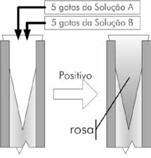
Figura 50 – Exame de nitritos em canos
de armas. (Ilustração: Marcelo Jost). No caso dos tambores de revólveres, cada câmara pode ser analisada de modo independente, colocando-se um cone de papel em cada uma e procedendo-se como nos exames dos canos de armas. Para as demais partes da arma, os resíduos de nitrito podem ser coletados com um algodão limpo embebido em água destilada morna, sendo as soluções de reagentes gotejadas diretamente no algodão. O resultado será positivo se o algodão adquirir uma coloração rosa. A presença de nitritos também pode ser verificada no interior de estojos percutidos e deflagrados. Para isso, o interior do estojo é lavado três vezes com uma solução de ácido acético 5%, utilizando cerca de um mililitro a cada vez, e juntando-se as águas de lavagem. As soluções do reagente de Griess podem ser gotejadas diretamente nas águas de lavagem coletadas. O resultado será positivo se a solução adquirir uma coloração rosa.
Durante a evolução dos efeitos secundários de um disparo, parte dos resíduos pode ficar depositada nas mãos ou em outras partes do corpo do atirador. A detecção da presença desses resíduos pode, por exemplo, constituir em um indício diferencial entre um suicídio ou homicídio, quando for possível vincular a presença deles a outros fatos levantados na investigação. A presença destes resíduos não pode, entretanto, constituir a única prova material. Existem duas técnicas tradicionais hoje não mais utilizadas: a) a primeira, denominada prova de Iturrioz, utilizava resíduos de nitritos, os quais eram removidos das mãos do atirador com parafina derretida e analisados com o reagente de Griess. A técnica foi abandonada devido a todas as fontes de incerteza já descritas nos testes de recentidade de disparos; b) a segunda utilizava apenas a presença de chumbo, revelado pela reação com rodizonato de sódio, como resultado positivo para a análise. A técnica foi abandonada devido a testes que mostraram que as mãos da pessoa investigada poderiam estar contaminadas com chumbo proveniente de outras fontes, levando a um resultado falso-positivo. A técnica moderna utiliza, então, a Microscopia Eletrônica de Varredura (MEV) para detectar partículas microscópicas, projetadas nas mãos do atirador no momento do disparo, tendo essas partículas forma característica e nos quais podem ser encontrados os metais provenientes da mistura iniciadora, como chumbo, bário e antimônio. Tais partículas foram caracterizados como provenientes unicamente de disparos com arma de fogo. O tipo de arma influi significativamente na forma como os resíduos se depo sitam sobre o atirador. Certas armas, tais como os revólveres, possuem zonas de escape intenso na junção do tambor com o cano, enquanto outras (pistolas e espingardas), quase não possuem zonas de escape intensas, já que as câmaras são herméticas. Assim, no momento de coletar os resíduos, o perito deve ter em mente o tipo de arma utilizada pelo atirador.
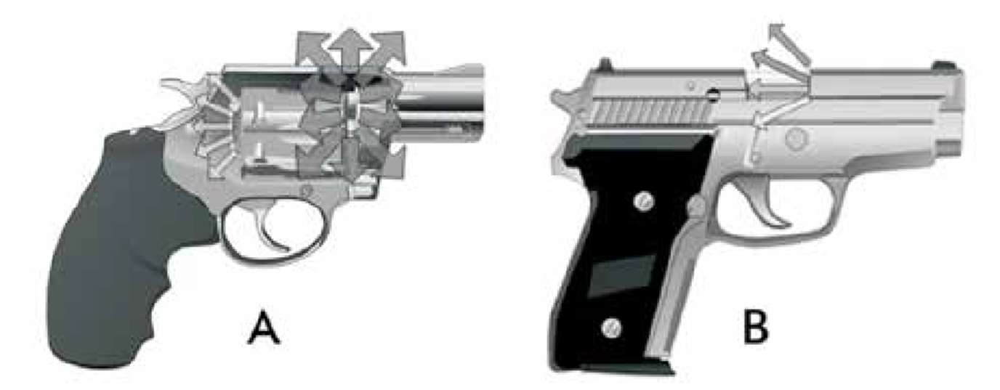
Figura 51 – Zonas de escape (A) em um revólver e (B) em uma pistola. O tamanho das
setas é uma ilustração da intensidade do escape de gases. (Ilustração: Marcelo Jost). A atitude do atirador, após efetuar o(s) disparo(s), interfere fortemente no resultado dos testes. Um estudo efetuado mostrou os seguintes resultados com um grupo de atiradores: a) 90% dos testes fornecem um resultado positivo quando os resíduos foram coletados imediatamente após os disparos; b) 60% dos testes forneceram um resultado positivo quando os resíduos foram coletados cerca de duas horas após os disparos; c) se o atirador lavar as mãos com água corrente após efetuar os disparos, a técnica fica no limite de detecção; d) se o atirador lavar as mãos com água e sabão, todos os resíduos são completamente eliminados. Fica evidente que, para o sucesso da técnica, os resíduos devem ser coletados da pessoa o mais rapidamente possível após terem sido efetuados os disparos. Além disso, caso haja a previsão do emprego da técnica durante uma investigação, quando o suspeito for detido, suas mãos devem ser embrulhadas com sacos de papel ou sacos plásticos limpos, de modo a preservar os vestígios.
Na Polícia Federal, a coleta de resíduos de disparo de arma de fogo para aná lise no microscópio eletrônico de varredura (MEV) é disciplinada pela INSTRUÇÃO TÉCNICA N.º 001/2010-GAB/DITEC, DE 18 DE FEVEREIRO DE 2010. A técnica padronizada inclui a utilização de stub com fita de carbono dupla face, e uma ampla variedade de superfícies ou regiões poderá ser objeto de coleta, tanto em pessoas (vivas ou mortas, nas mãos, rosto e pescoço, por exemplo), quanto em objetos (exemplo: vestimentas, portas, assentos e forros).
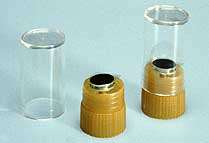
Figura 52 – Recipientes plásticos aberto e fechado,
contendo haste metálica de alumínio (stub) com fita condutora adesiva em dupla face preta. Como exemplo, supondo uma empunhadura normal de uma arma curta de porte, a principal área de coleta na mão de um suspeito de ter atirado é a área escura indicada na figura abaixo[8].
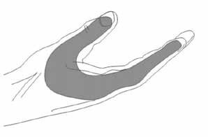
Figura 53 – Área de coleta de resíduos de disparo na
mão do atirador. (Ilustração: Lebiedzik). O perito que está realizando a coleta deve sempre utilizar luvas ou ter as mãos lavadas com água e sabão, de modo a evitar a contaminação dos materiais de coleta. O procedimento adequado de coleta envolve os seguintes passos:
Define-se como tiro a curta distância aquele que ocorre dentro da região espacial na qual os efeitos secundários do disparo imprimem marcas sobre o alvo. Além desse limite, os tiros são ditos distantes. Este é um conceito eminentemente prático, pois a distância máxima na qual os efeitos secundários são sentidos depende do alcance, grau de concentração e especificidade dos resíduos expelidos, o que depende da arma, da munição e das condições ambientais no momento do disparo. Tomando-se por base os resíduos geralmente pesquisados, ou seja, resíduos de combustão da pólvora e espoleta, o limite prático é de cerca de um metro, se não houver vento no momento do disparo. Caso haja vento, esse limite pode diminuir para cerca de meio metro. O objeto de estudo do presente exame é o zoneamento característico impresso pelo disparo de arma de fogo em um anteparo, ou seja, a zona de chama, a zona de esfumaçamento e a zona de tatuagem. A zona de chama é aquela produzida pelos gases em combustão e em alta temperatura que são expelidos pelo cano, gerando efeitos característicos, como tecido queimado ou pelos crestados. Seus efeitos dificilmente são detectáveis além de dez centímetros da boca do cano. A zona de esfumaçamento é constituída pelos resíduos de combustão da pólvora, sob a forma de pequenas partículas e fuligem, ficando impregnados na superfície do anteparo de tiro. Sua forma e características podem fornecer informações importantes acerca do tipo de pólvora utilizado no disparo e do ângulo de tiro. A zona de tatuagem é determinada pela incrustação, no alvo e em volta da região de impacto do projétil, de grãos de pólvora incombusta, também deno minados de microprojéteis. Essas zonas se dispõem concentricamente em relação à perfuração do projétil, nos casos em que o tiro é dado perpendicularmente ao alvo, ou em formas elípticas, no caso em que o tiro é dado inclinado em relação ao alvo.
Em muitas ocorrências, os disparos de arma de fogo acabam atingindo as vestes da vítima e deixando nelas seus resíduos. Assim, as vestes tornam-se o anteparo descrito acima. A coleta adequada e a correta preservação desses resíduos são de fundamental importância para sua análise e interpretação. O primeiro passo consiste na descrição e documentação fotográfica dos resíduos do disparo enquanto as vestes ainda estão na vítima, observando que as fotos deverão apresentar escala. Em seguida, as vestes devem ser removidas, sendo que, caso não possuam botões, é preferível cortá-las, permitindo sua retirada sem a contaminação de outras partes da vestimenta. Para a preservação, deve -se colocar uma folha de papel branco e limpo, tanto na face interna quanto na externa da roupa, podendo esta, então, ser dobrada ou enrolada e armazenada para análise. As substâncias pesquisáveis para a determinação de distância de tiro são:
O procedimento experimental para se determinar a distância do disparo consiste em três fases, ou seja, (a) coletar os anteparos padrões; (b) efetuar os procedimentos de revelação pertinentes em cada anteparo padrão; e (c) comparar os resultados obtidos com o anteparo questionado. Assim, após obter um anteparo com as mesmas características do anteparo questionado, ou pelo menos similares, o primeiro passo consiste em preparar uma série de quadrados, com meio metro de lado. Logo após, deve-se efetuar um disparo em cada quadrado, anotando a distância de tiro. A distância inicial dependerá das características do anteparo questionado, mas em caso de dúvida pode-se começar com um tiro encostado ao anteparo e ir aumentando a distância até um metro, com intervalos regulares. Uma vez coletados os anteparos padrões, efetuar os procedimentos de revelação convenientes. Por último, após efetuar o mesmo tipo de revelação no anteparo questionado, comparar os resultados e verificar qual dos padrões se assemelha mais ao anteparo questionado. Por semelhança, pode-se estimar a distância do disparo. Como exemplo, a figura abaixo é um esquema de um residuograma típico, no qual a distância de tiro não é conhecida.
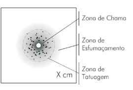
Figura 54 – Residuograma em anteparo questio
nado. (Ilustração: Marcelo Jost). O perito efetua uma série de disparos, de diferentes distâncias, obtendo como resultado, entre outros, os dois residuogramas ilustrados abaixo.
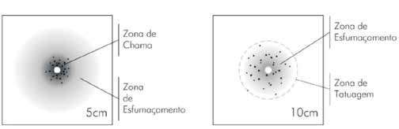
Figura 55 – Residuogramas padrões nas distâncias de 5cm e 10cm. (Ilustração: Marcelo Jost).
Dadas as características intermediárias do residuograma questionado com relação aos residuogramas padrões, colhidos nas distâncias de cinco centímetros e dez centímetros, o perito pode concluir que o disparo foi efetuado entre essas distâncias, ou seja, o disparo questionado foi efetuado a uma distância de cinco a dez centímetros do anteparo. Considerando o grande número de variáveis envolvidas no momento de um disparo, as marcas impressas pelos efeitos secundários são pouco precisas, de modo que o exame acima discutido pode apenas gerar uma estimativa de distância.